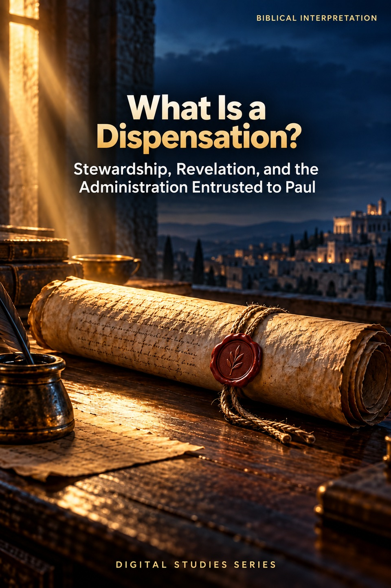
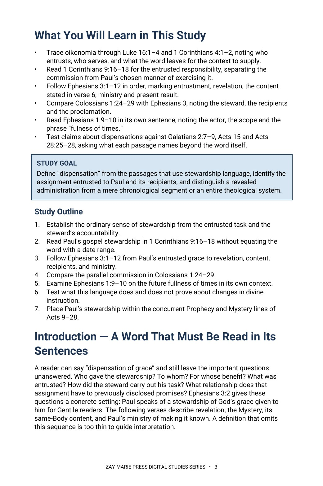
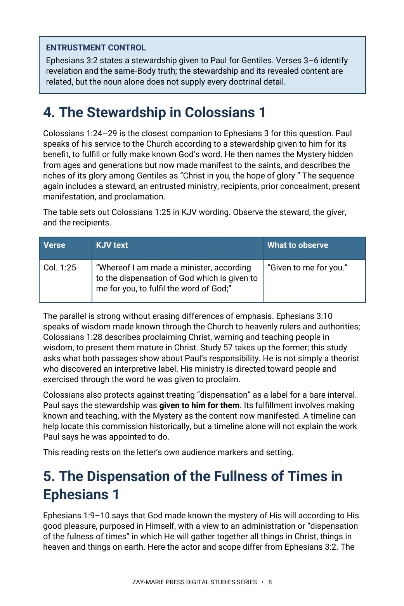

What Is a Dispensation?
Stewardship, Revelation, and the Administration Entrusted to Paul
What was entrusted to Paul, and for whom?
“Dispensation” can be used as a label for any biblical era, but Paul speaks of a stewardship given to him for others. Study 58 follows the word in its sentences: who entrusts, who serves, what is administered, and who receives the benefit.
Compare Paul’s gospel responsibility, the grace stewardship in Ephesians 3, the ministry in Colossians 1, and God’s future administration in Ephesians 1. The passages share administrative language without describing one identical assignment.
Read the Stewardship in Its Context
Ephesians 3:2 names a stewardship of God’s grace given to Paul for Gentiles. The following verses identify a formerly hidden Mystery now revealed through him and specify fellow membership in one Body in Christ by the gospel. The study distinguishes the entrusted responsibility from the truth made known through it, then compares the different administrative setting of Ephesians 1:10.
Study 6 identifies the Mystery’s content; Study 32 compares organizing theological systems; Study 57 examines eternal purpose and Christ’s headship. Study 58 supplies the narrower word and passage study needed before using “dispensation” as a system label. It also shows why Paul’s new stewardship during Acts 9–28 does not itself end Israel’s concurrent prophetic commission or cancel earlier promises.
How These Studies Relate
Study 58 asks what the stewardship language actually establishes. Each connected study answers a neighboring question that the word alone cannot settle.
Study 6 — The Mystery Revealed Through Paul Identify what was hidden and disclosed through Paul; Study 58 then asks how Paul was entrusted to make that truth known.
Study 32 — Covenant Theology and Dispensational Theology Compare wider organizing systems only after testing what Paul’s term establishes in its immediate passages.
Study 57 — The Eternal Purpose of God Examine God’s prior purpose and future fullness without treating Ephesians 1:10 as another description of Paul’s personal commission in Ephesians 3:2.
Study 18 — Peter and Paul: Distinct Apostolic Commissions Test the concurrent apostolic assignments from Acts and Galatians; the word “dispensation” alone cannot establish their historical timing.
Follow the Entrusted Assignment
Meaning in Context
Trace oikonomia through Luke 16:1–4 and 1 Corinthians 4:1–2, noting who entrusts, who serves, and what the context must supply.
Gospel Responsibility
Read 1 Corinthians 9:16–18 for the entrusted responsibility, separating the commission from Paul’s chosen manner of exercising it.
Grace Stewardship
Follow Ephesians 3:1–12 in order, marking entrustment, revelation, the content stated in verse 6, ministry and present result.
The Colossians Parallel
Compare Colossians 1:24–29 with Ephesians 3, noting the steward, the recipients and the proclamation.
Future Administration
Read Ephesians 1:9–10 in its own sentence, noting the actor, the scope and the phrase “fulness of times.”
Acts Overlap
Test claims about dispensations against Galatians 2:7–9, Acts 15 and Acts 28:25–28, asking what each passage names beyond the word itself.
Compare the Passages Before Defining the Term
Luke 16:1–4
Note the ordinary household setting: who entrusts, who serves, who is accountable.
1 Corinthians 4:1–2
Mark what is required of a steward and of whom.
1 Corinthians 9:16–18
Separate the entrusted responsibility from Paul’s chosen manner of exercising it.
Ephesians 3:1–12
Follow entrustment, revelation, the content of verse 6, and the ministry that results.
Colossians 1:24–29
Mark the steward, the giver, the recipients and the proclamation.
Ephesians 1:9–10
Note the actor, the scope, and the phrase “fulness of times.”
Galatians 2:7–9
Read what is recorded about the ministries recognized for Peter and for Paul.
Acts 28:25–28
Trace Paul’s citation of Isaiah, Israel’s response, and the turn to the Gentiles.
The Question Behind the Word
“Dispensation” names an administration or stewardship whose precise content comes from its context.
Ask who entrusted it, who serves, what is ordered or made known, and who receives it before drawing a larger historical conclusion.
Preview the Study Before You Purchase
Click any page to enlarge it for reading.



Learning Outcomes and Study Goal
See the questions and interpretive controls that guide the reading.


The Stewardship in Colossians
Read a substantive comparison without disclosing the study’s full synthesis.
A Focused Study of Stewardship
20-Page Digital PDF
Approved cover and 19-page interior with aligned contents.
Ten Teaching Sections
Move from the word’s uses to textual and historical claims.
Passage Comparison Table
Keep each administration’s subject and scope in view.
Key Distinctions
Separate stewardship, content, period, and theological system.
Scripture-Tracing Exercise
Record giver, steward, recipients, timing, and what remains unstated.
Teaching Outline and Further Study
Use guided passages to explain and test the study’s claims.
What Is a Dispensation?
20-page digital PDF · For personal use